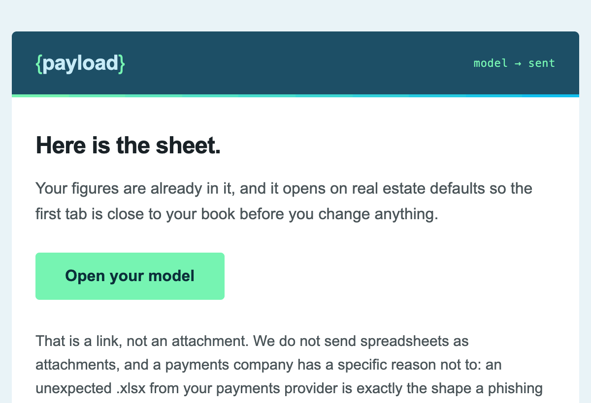
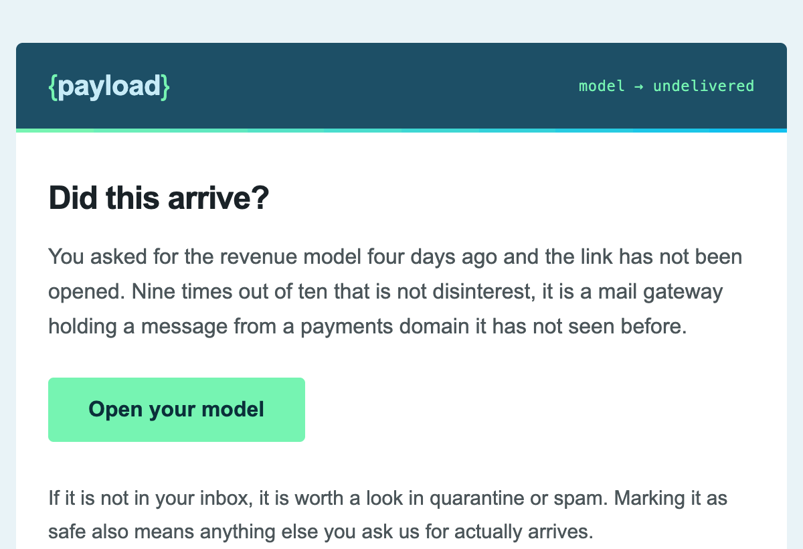
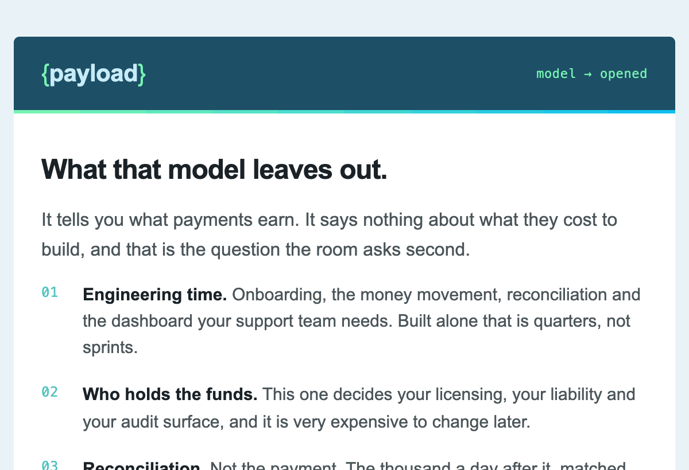

Somebody downloaded a spreadsheet. That is not a lead yet.
The page promised no newsletter and said you could take the sheet and never hear from us again. So exactly one email here sends without a signal, and it is about whether the thing arrived. Everything else waits for the reader to move first, and the one path that earns a demo offer hands to a person rather than sending a third email.
- 2
- Emails, to any one person
- 1
- Sends unprompted
- 0
- Time based drips
- 4
- Paths, all of them end
Behaviour decides this, not a calendar. A drip assumes everyone who downloads something wants a relationship. Most of them wanted a spreadsheet. Pick a path and read it top to bottom. Every path here is also subject to the rules that cancel a send, which are shared with the demo flow.
model_requested fires on the revenue page
The sheet

Your payments revenue model
Open the real email4 days, and no model_opened
The delivery check

Your model did not open. Probably our fault.
Open the real email6 more days, still watching for model_opened
Nothing sends in this window. It exists because a late open moves them to path M2, and a record closed on day four cannot be reopened.
model_undelivered
Not a lost lead, an address two messages could not reach. It leaves the marketing flow entirely and joins a deliverability report grouped by recipient domain, because one unreachable person is noise and eleven at the same company is a blocklist. Nobody calls them, nothing re enters, and the address stays mailable if they ever ask for something again.
The path that is really a deliverability problem. Two emails, ten days, and no third attempt.
- Who lands here
- Anyone who asked for the sheet and never opened the link. It is a bigger group than most teams expect and almost none of it is disinterest.
- Why the email is about delivery
- A payments domain sending a spreadsheet link to a corporate gateway is a message that gets held. Treating that as a lost lead rather than a blocked message is how a list quietly rots.
- Why no third try
- Two unopened sends to one address is a signal about deliverability, not intent. A third damages the sending reputation every other path depends on.
model_requested fires on the revenue page
The sheet
Your payments revenue model
Open the real emailUntil model_opened, then 3 days
The second objection

The number is the easy part
Open the real email14 days
model_reviewed
They have the number and the cost of getting it. The record goes to a human list reviewed quarterly.
Opened, read, and then nothing. The largest path, and the one most sequences ruin.
- Who lands here
- They took the number and went back to work. Nothing has gone wrong.
- Why one email and not five
- They asked for a spreadsheet and got a spreadsheet. That is the relationship they agreed to. Email 10 is justified only because opening the sheet says the topic is still live.
- What fourteen days does
- It closes the record. Without an explicit end, every download sits in a CRM forever and somebody eventually builds a win back campaign on top of it.
model_opened fires, same as path M2
M2 and M3 are one path until email 10 lands. What separates them is whether the reading inside it gets clicked.
The second objection
The number is the easy part
Open the real emailA click on the reading inside email 10
This is the branch, not a wait. No click and the record follows M2 to its ending. A click is the second signal, and two is enough.
A task for a person, inside 2 business days
No third automated email fires here. The record goes to whoever owns platform accounts, carrying both signals, the vertical, and the figures they modelled. They write one real email, in their own words, with the demo link in it. An automated "ready for a demo?" to somebody who read two articles is exactly the move this whole flow refuses, and it is the move that makes a good sequence feel like a machine.
If nobody acts inside two business days the record falls back to the M2 ending rather than escalating. A sequence that cannot be staffed should close, not keep sending.
The page they would be senthanded_to_acquisition
The model flow ends here whether or not the person writes. If they do and it lands, the demo lifecycle picks up at the booking page with the vertical already on the record.
Two signals they created, which is the only thing that earns an offer here.
- Who lands here
- Opened the model, got email 10, and clicked the reading inside it. Two signals on two different days, both of them theirs.
- Why a person and not an email
- One click is curiosity. A second, on a different day, is research, and research is when a demo is useful rather than premature. It is also the point where a templated send would undo everything the first two emails bought, so the flow stops and hands over.
- The seam
- They arrive at the form already carrying a vertical, so screen one is answered before they see it. Two builds, one record.
A human reply, to email 08 or 10
Automation stops
Every queued send is cancelled on the first reply.
in_conversation
No nurture, no re-entry, no win back. A person is talking to a person.
A person replied. Everything automated stops in the same second.
- Who lands here
- Any reply to email 08 or 10, including a one word one.
- Why every queued send cancels
- The fastest way to undo a good sequence is to email somebody who already answered. It reads as nobody being home. A reply is only one of six things that stop a send, and the other five matter more, because most of them are triggered by a colleague rather than by the prospect.
- No re-entry
- They do not go back in the flow later and there is no win back. If it ends, it ends with a human, which is the only honest way to end one.